RStudio Quick Referrence
Functions and Data
Common Functions
| function | R command | comments |
|---|---|---|
| \(x^2\) | x^2 |
|
| \(4x^2 -7x + 3\) | 4*x^2 - 7*x + 3 |
You must always include the * when you multiply |
| \(\sqrt{x}\) | sqrt(x) or x^(1/2) |
|
| \(\sqrt[3]{x}\) | x^(1/3) |
|
| \(\sin(x)\) | sin(x) |
|
| \(\cos(x)\) | cos(x) |
|
| \(e^x\) | exp(x) |
exp is a function (like sin and cos), so you do NOT need a ^ |
| \(\mbox{ln}(x)\) | log(x) |
RStudio uses the natural logarithm as the default |
| \(\log(x) = \log_{10}(x)\) | log10(x) |
Humans default to “log base 10.†RStudio does not! |
| \(\log_{b}(x)\) | log(x,b) |
You can use any number \(b\) as the base for your logarithm |
Defining Your Own Function
The makeFun command is part of the mosaic package.
| desired function | R command | comments |
|---|---|---|
| \(f(x) = x^2 +5x + 6\) | f = makeFun(x^2 + 5*x + 6 ~ x) |
remember your * signs! |
| \(g(x) = \sin^2(x) - \frac{1}{2}\) | g = makeFun(sin(x)^2 - 1/2 ~ x) |
note the placement of ^2 |
| \(P(t) = 5 e^{.25 t}\) | P = makeFun(5 * exp(0.25 * t) ~ t) |
exp does not need a ^ |
| \(Q(t) = 12.38 (1.041)^t\) | Q = makeFun(12.38 * (1.041)^t ~ t) |
Notes:
- The general syntax is
makeFun( OUTPUT ~ INPUT )where the OUTPUT is a function of the INPUT. - You must assign this to a variable so that you can use it later. So your command must start with
f = ...so that you get a function namedf. - The variable (
xort, etc) that appears in the OUTPUT must match the INPUT variable that appears after the tilde~. The the commandmakeFun(x^2 ~ t)won’t work because thex^2is not a function oft.
Creating Lists of Data
Use c() to “combine†some values into a list. Assign the list to a variable so that you can use it later.
## [1] 2 3 5 7 11 13 17 19 23 29## [1] 5 -2 7 3 -10 15Use seq() to generate a sequential list of values in a specified range. The optional third parameter tells RStudio to increment by that value instead of incrementing by 1.
## [1] 1 2 3 4 5 6 7 8 9 10## [1] 5.00 5.25 5.50 5.75 6.00## [1] 5.0 5.1 5.2 5.3 5.4 5.5 5.6 5.7 5.8 5.9 6.0Plotting Data
Use plotPoints to plot a list of \(y\)-axis data versus a list of \(x\)-axis data. Separate these lists with a tilde ~.


Plotting Functions
Use plotFun to plot a function.
- As with
plotPoints, we use a tilde~to separate the output variable (the function) from the input variable. - The optional
xlimargument specifies the domain for the plot.

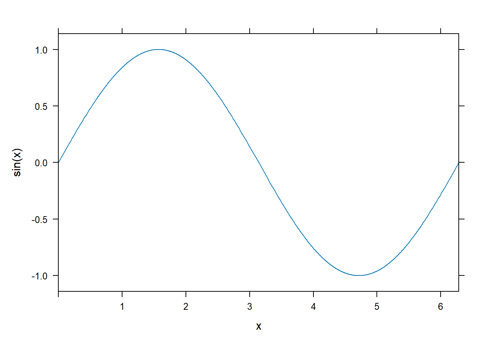
We can layer one plot on top of another by using the add=TRUE argument.
- You only need to specify the
xlimfor the first plot because the second one is added to the first. - It’s helpful to change the color for subsequent plots. Use the argument
col="red"using any color name you like (RStudio knows a lot of colors!)
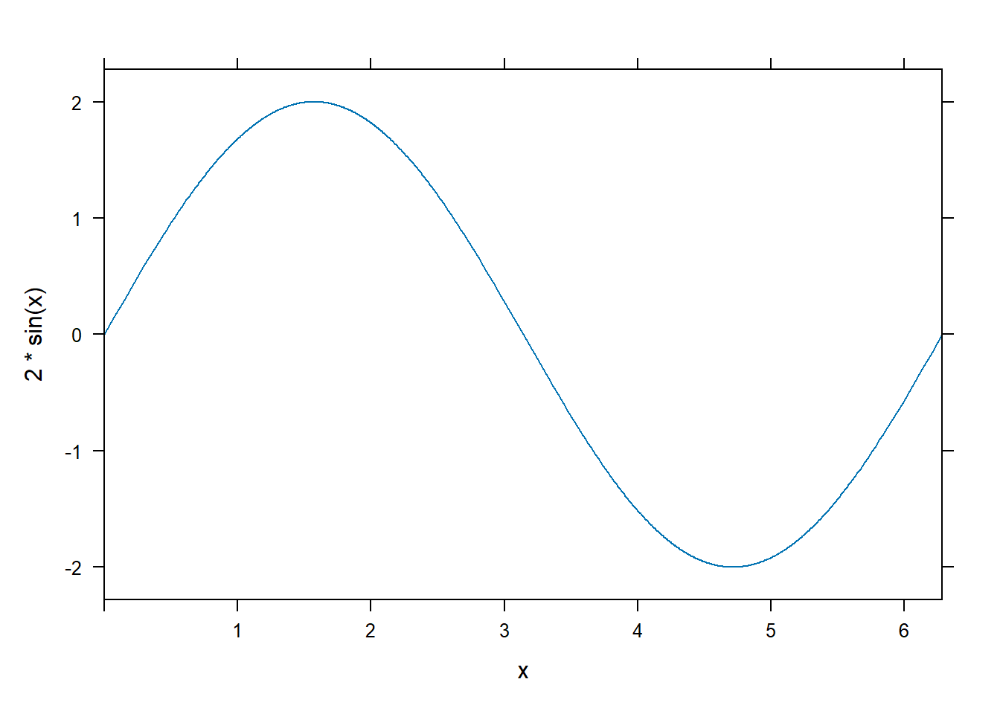
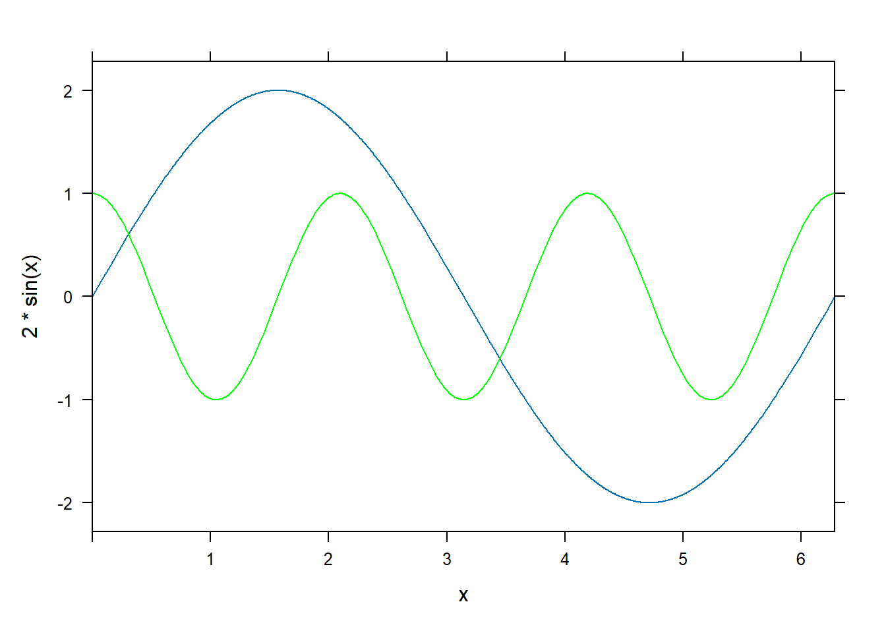
We can label the axes using xlab and ylab. When you are layering two plots, you must specify these labels in the first function that you plot!
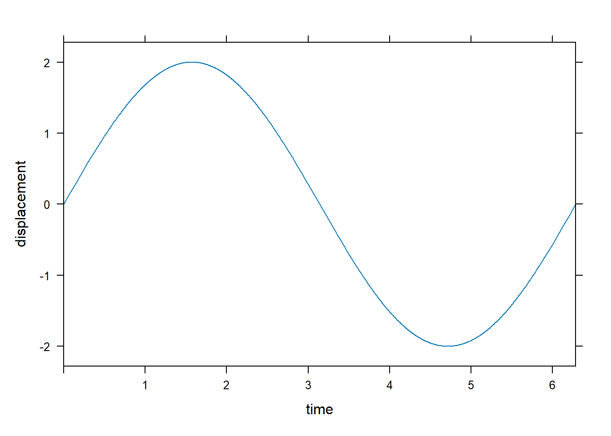
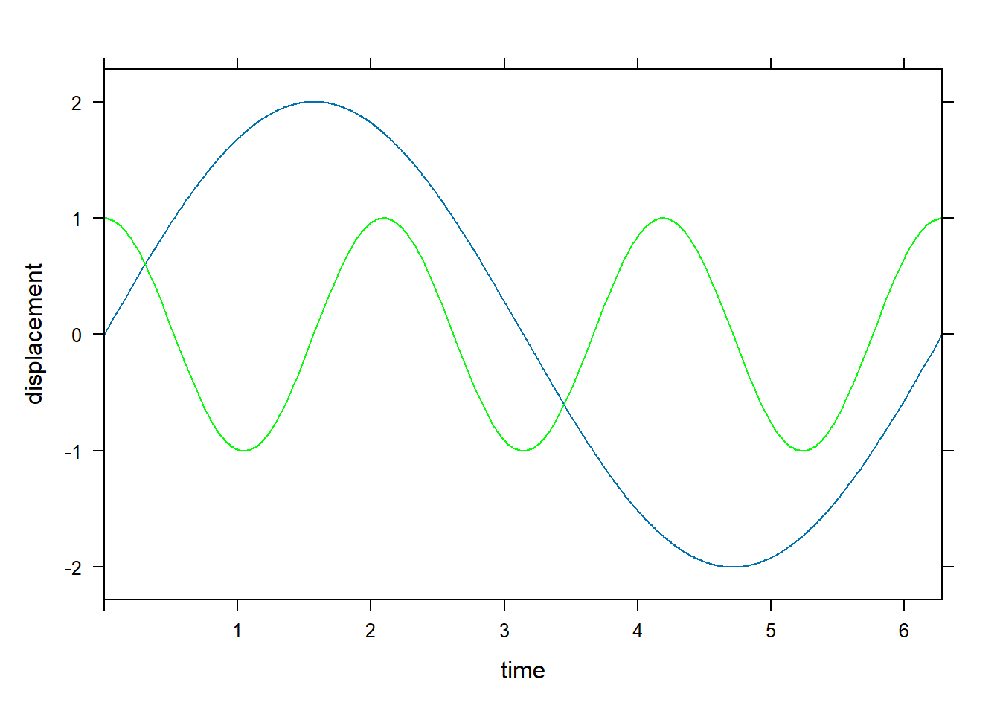
The plotFun command takes a whole variety of parameters, here are a few useful ones:
xlim,ylim: sets the range of your \(x\)-axis. Example:xlim=range(1,4), ylim=range(3,60)col: sets the color of the function you plot. RStudio will recognize most basic colors, which you will pass as strings. Example:col="red"add: you’ll use this when you want to add multiple functions to the same plot. We’ll see an example of it below. Example:add=TRUExlab,ylab: for labeling your axes. You’ll pass this as a string as well. Example:xlab="time", ylab="red=velocity, blue=position"
Let’s try some of this out. I broke the third line so it would all fit, you don’t need to!
f=makeFun(x^3+3~x)
g=makeFun(3*x^2~x)
plotFun(f(x)~x, xlim=range(1,4), ylim=range(3,60),
col="blue",xlab="time", ylab="red=velocity, blue=position")
plotFun(g(x)~x, col="red", add=TRUE)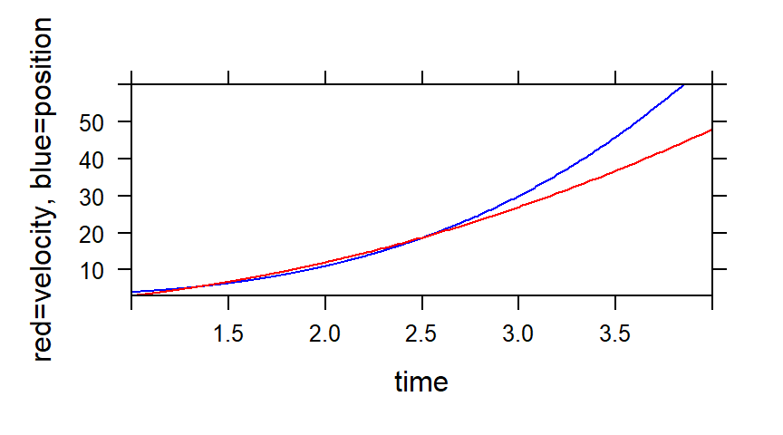
RStudio is a little weird about plots in the RMarkdown in that you might get multiples if you’re adding plots together. If you want the chunk to hold all plots until the end, add fig.show='hold' into the script braces at the top of the chunk.
Plotting Data and Functions
We can also combine plots of data and functions using add=TRUE.
time_data = seq(0,50, 10)
pop_data = c(6.82, 9.63, 14.3, 20.48, 28.94, 42.25)
plotPoints(pop_data ~ time_data, xlab='years since 1950', ylab='population (millions)')
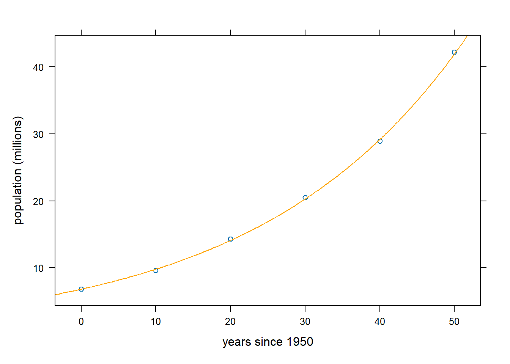
Fitting a Function to Data
The fitModel command is part of the mosaic package. Here is how you would fit a linear model to data
## function (xdata, ..., transformation = function (x)
## x)
## return(transformation(predict(model, newdata = data.frame(xdata = xdata),
## ...)))
## <environment: 0x000001f9e6fc19c8>
## attr(,"coefficients")
## A B
## 1.70 4.18
## attr(,"class")
## [1] "nlsfunction" "function"This output says that the best fitting linear function has slope \(A=1.70\) and \(y\)-intercept \(B=4.18\). So let’s create the corresponding linear function and plot it with the data.

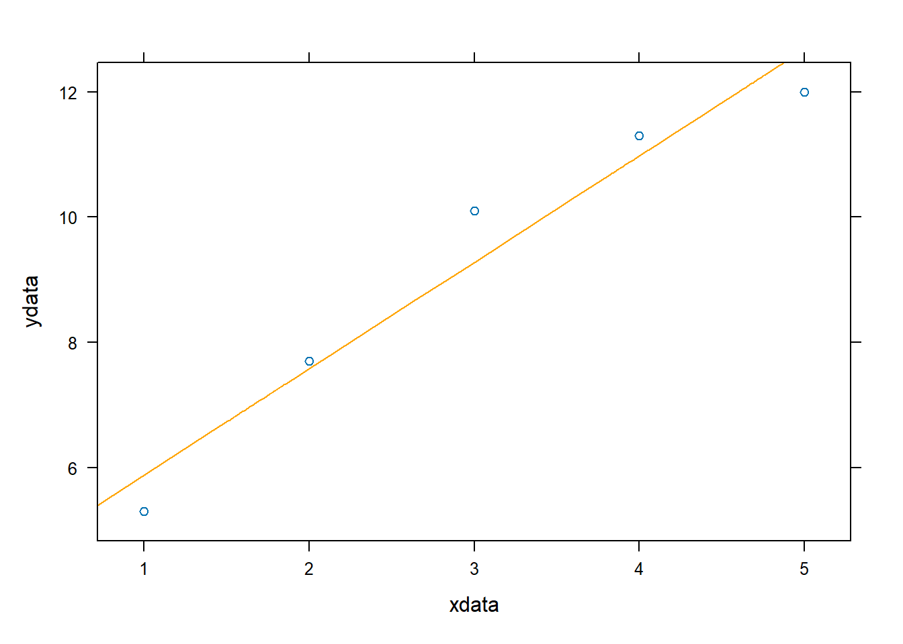
Fitting a Power Function to Data
Here are the steps to fit xdata and ydata to a power function \(f(x) = c x^p\).
- Take the log of both
xdataandydata - Fit a linear function \(y = A x + B\) to the resulting data
- The original constants are
p = Aandc = exp(B)
Here is an example
f = makeFun(4.3 * x^(1.7)~x)
xdata = c(1, 3, 5, 7, 9)
ydata = c(7, 33, 65, 110, 180)
logxdata = log(xdata)
logydata = log(ydata)
fitModel(logydata ~ A * logxdata + B)## function (logxdata, ..., transformation = function (x)
## x)
## return(transformation(predict(model, newdata = data.frame(logxdata = logxdata),
## ...)))
## <environment: 0x000001f9def08af0>
## attr(,"coefficients")
## A B
## 1.449432 1.915983
## attr(,"class")
## [1] "nlsfunction" "function"This tells us that \(A=1.45\) and \(B=1.92\). We solve for \(c\) and plot the function with the data
## [1] 1.45## [1] 6.820958
Fitting a Model by Specifying Starting Values
Sometimes fitModel fails to find a good model for the data. Here are two things that can happen.
- The command
fitModelfails, 7.complaining about a “singular gradient.†This means thatfitModelpicked a bad starting point, and can’t figure out how to improve it’s initial guess. - The command
fitModeldoes find a function, but when we plot it, we realize that it’s not what we want.
Here is an example of fitModel returning a function that we don’t like. Let’s load in the `utilities.csv’ data set and look at the first few rows.
## Retrieving from http://www.mosaic-web.org/go/datasets/utilities.csv## month day year temp kwh ccf thermsPerDay dur totalbill gasbill elecbill notes
## 1 2 24 2005 29 557 166 6.0 28 213.71 166.63 47.08
## 2 3 29 2005 31 772 179 5.5 33 239.85 117.05 62.80
## 3 1 27 2005 15 891 224 7.5 30 294.96 223.92 71.04
## 4 11 23 2004 43 860 82 2.8 29 160.26 88.51 71.75
## 5 12 28 2004 23 1160 208 6.0 35 317.47 224.18 93.29
## 6 9 26 2004 71 922 15 0.5 32 117.46 21.25 96.21Now let’s plot temperature versus month

We have ploted monthly temperature data for multiple years. Let’s try to fit a periodic function.
## A w p C
## -28.67993 -6.78753 56.15894 47.20908
This is not what we wanted! It looks like fitModel was confused by the multiple data points for each month. So the frequency w is completely wrong. We can correct this by specifying an initial guess for w. We think that the period should be 12 months, so we want to start with w=2*pi/12.
## w A p C
## 0.5043435 -28.6799747 -22.8387987 47.2090049That looks much better!
Plotting Surfaces in 3D
We plot functions \(z = f(x,y)\) using the plotFun() command. We specify the independent variables with the syntax ~ x&y. By default, RStudio will create a contour plot of this function and include shading to help visualize the values of the function.
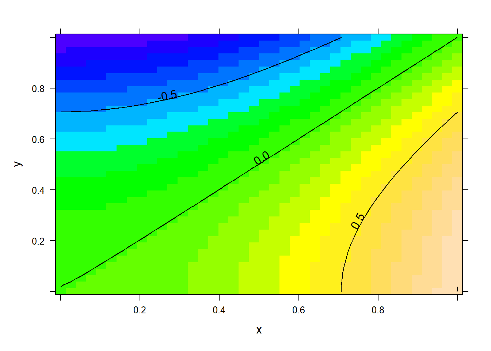
You can add more contours using the levels parameter, and turn off the shading with the filled parameter.
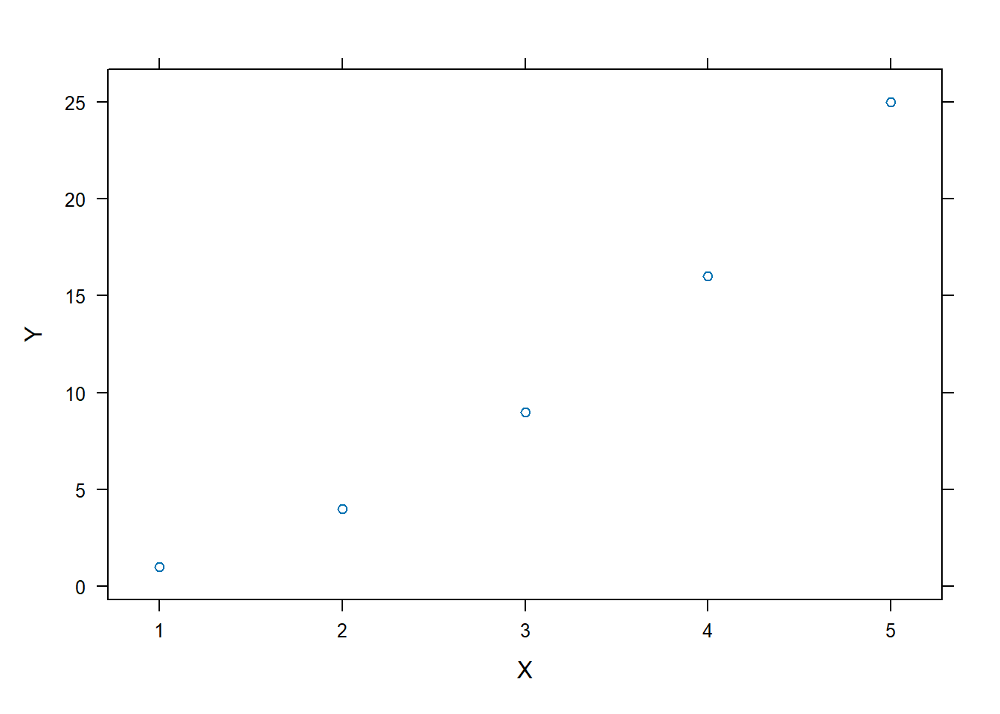
You can change the plot range using xlim and ylim.
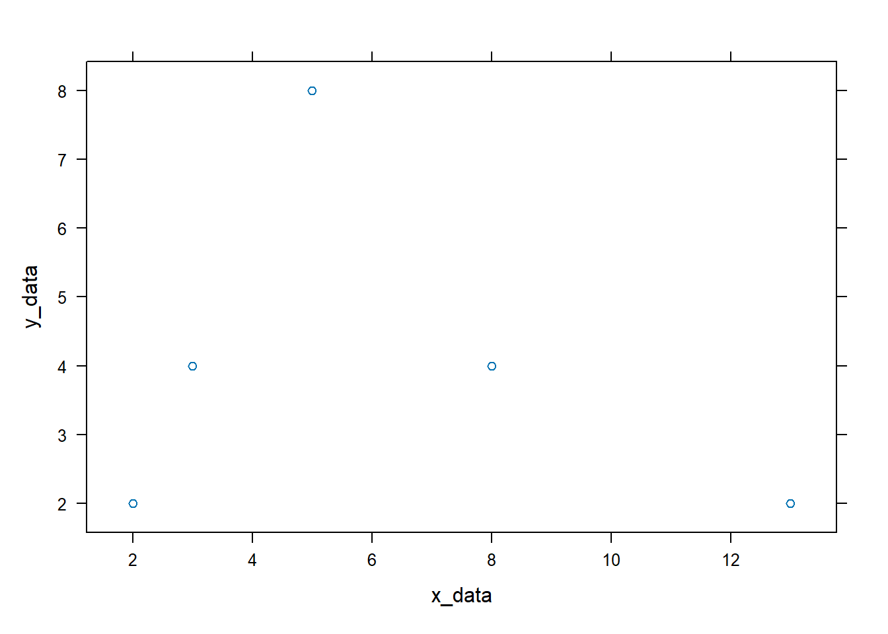
You can create a 3D plot by setting surface=TRUE.
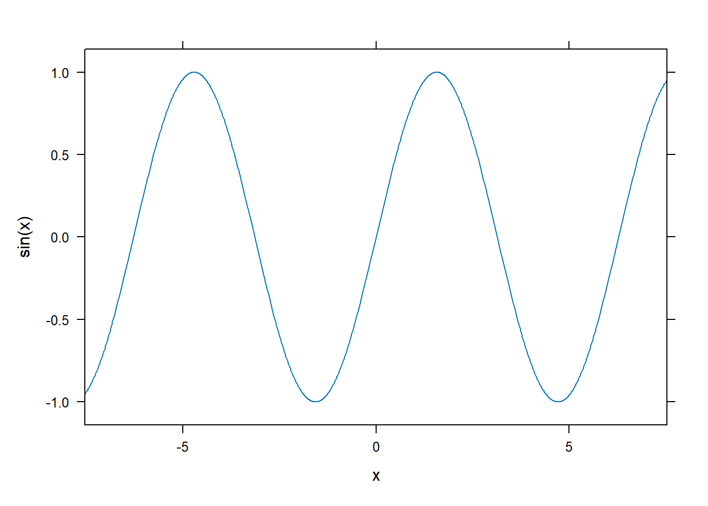
Differentiation
Estimating the Derivative
We can estimate the derivative of \(f'(x)\) by using the average rate of change \[ f'(x) \approx\frac{f(x+\alpha)-f(x)}{\alpha} \] for some small number \(\alpha > 0\). Smaller and smaller \(\alpha\)’s lead to better and better approximations.
So we can estimate the derivative by using smaller and smaller \(\alpha\) values until our estimates stabilize. Here is an example that estimates \(f'(4)\) for the function \(f(x) = x^2 + 10*\sin(x)\).
f=makeFun(x^2+10*sin(x)~x)
alpha=c(1, 0.1, 0.01, 0.001, 0.0001, 0.00001, 0.000001, 0.0000001)
d=(f(4+alpha)-f(4))/alpha
d## [1] 6.978782 1.952538 1.511513 1.468349 1.464042 1.463612 1.463569 1.463564The estimates stabilize to the value \(1.46356\). So our estimate is \(f'(4) \approx 1.46456\)
Estimating the Partial Derivative
We can use the same method to estimate the partial derivates of \(g(x,y)\). We have \[ \frac{\partial g}{\partial x} \approx\frac{g(x+\alpha,y)-f(x,y)}{\alpha} \quad \mbox{and} \quad \frac{\partial g}{\partial y} \approx\frac{g(x,y+\alpha)-f(x,y)}{\alpha} \] Let’s estimate the partial derivatives of \(g(x,y) = e^{x \sin(y)}\) at the point \((2, 7)\). First, let’s estimate \(g_x(2,7) = \left. \frac{\partial g}{\partial x} \right|_{(2,7)}\). The code is very similar to the code we used for a single variable function.
g=makeFun(exp(x*sin(y))~x&y)
alpha=c(1, 0.1, 0.01, 0.001, 0.0001, 0.00001, 0.000001, 0.0000001)
d=(g(2+alpha,7)-g(2,7))/alpha
d## [1] 3.456634 2.526691 2.452648 2.445403 2.444680 2.444608 2.444601 2.444600We conclude that \(g_x(2,7) \approx 2.445.\)
Now let’s estimate \(g_y(2,7) = \left. \frac{\partial g}{\partial y} \right|_{(2,7)}\). All we need to do is move alpha into the \(y\)-variable.
g=makeFun(exp(x*sin(y))~x&y)
alpha=c(1, 0.1, 0.01, 0.001, 0.0001, 0.00001, 0.000001, 0.0000001)
d=(g(2,7+alpha)-g(2,7))/alpha
d## [1] 3.512524 5.761618 5.628032 5.612215 5.610611 5.610450 5.610434 5.610433We conclude that \(g_y(2,7) \approx 5.610.\)
Gradient Search
Here is code that will use gradient search to find the maximum of the function \[ f(x,y) = - x^4 - x^3 + 10 x y + 2y - 8 y^2 \] whose partial derivatives are \[ \frac{\partial f}{\partial x} = -4 x^3 -3 x^2 + 10 y \quad \mbox{and} \quad \frac{\partial f}{\partial x} = 10 x + 2 - 16 y \]
First, you define the partial derivatives and then choose your starting point (newx, newy). In this case, we start at (1,1).
Next, you repeatedly run the following code block, which updates the current point by moving 0.1 times the gradient vector. This is equivilant to taking a small step in the uphill direction.
Repeatedly to run this code block until the partial derivatives are essentially zero (at least two zeros after the decimal point). Congrats! You have found your local maximum.
slopex=partialx(newx, newy)
slopey=partialy(newx, newy)
newx = newx + 0.1*slopex
newy = newy + 0.1*slopey
# print new partial derivatives
c(partialx(newx, newy), partialy(newx, newy))
# print new point
c(newx, newy)Repeatedly running this code block will take you to the point (1.04,0.77). But note that starting at another initial point might take you to a different local maximum.
If you want to find a local minimum, then you should multiply the partials by -0.1 instead. This is equivalent to taking a small step downhill. Try this on the function \(f(x,y) = x^2 + 2 x y + 3 x + 4 y + 5 y^2\).
Constrained Optimization
Suppose that we want to find the maximum of the production function \(P(x,y)=3000x^{0.2}y^{0.8}\) given the constraint \(Q(x,y)= 4x + 3y = 200\).
We want to make a contour plot of \(P(x,y)\) and then add the constraint. The maximum value is achieved where the constraint \(Q(x,y)=300\) is tangent to the contour curve of \(P(x,y)\).
P = makeFun( x^(0.2) * y^(0.8) ~ x&y)
Q = makeFun( 4*x + 3*y ~ x&y)
plotFun(P(x,y)~x&y, xlim=c(0,80), ylim=c(0,80), filled=FALSE, levels=seq(20,80,5))In this case, the optimal value of \(38\) is achieved at approximately \((10, 55)\). Let’s make another plot to get a better estimate.
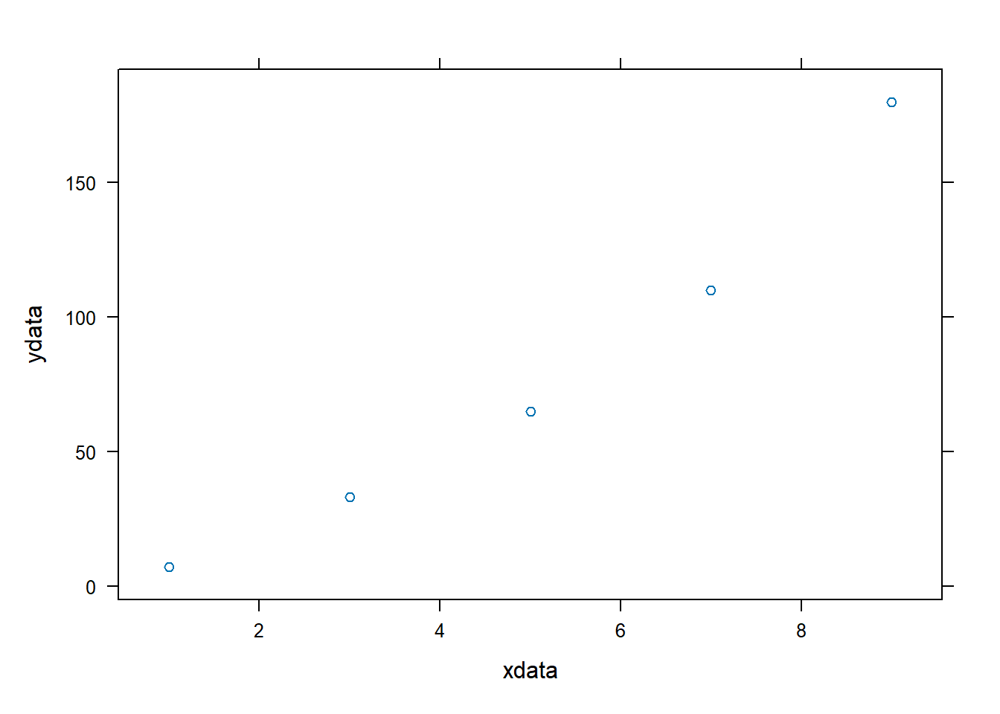
 On this zoomed in plot, we can refine our estimate a bit. The maximum \(f(10,53)=38\) is achieved at \(x=10\) and \(y=53\).
On this zoomed in plot, we can refine our estimate a bit. The maximum \(f(10,53)=38\) is achieved at \(x=10\) and \(y=53\).
Now, if I want to estimate the Lagrange multiplier \(\lambda\), I would change my constraint a little bit (say to \(210\)) and then look at the change in the optimal value.
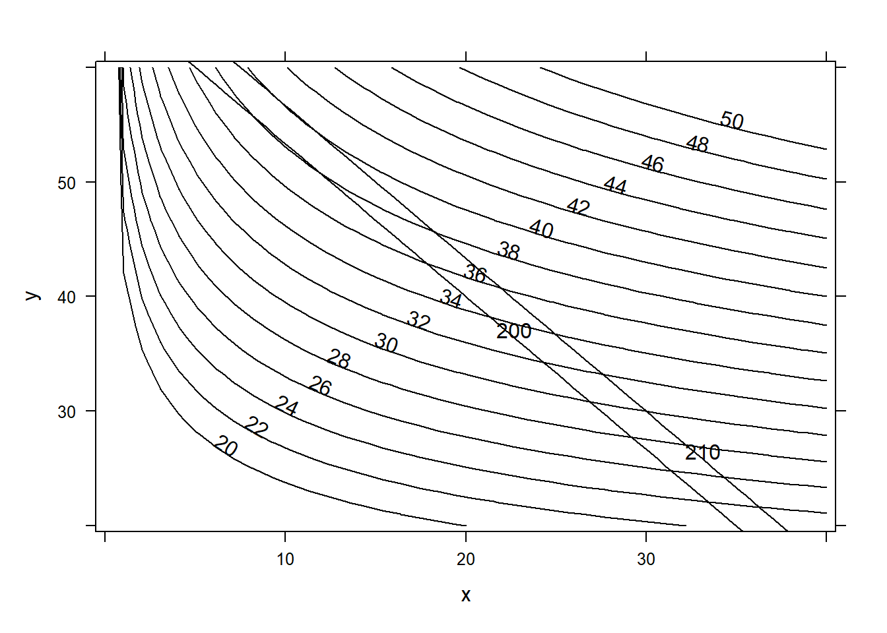
We have \[ \lambda = \frac{\triangle \mbox{optimal value}}{\triangle \mbox{constraint}} = \frac{40 - 38}{210-200} = \frac{2}{10} = 0.2. \]
Integration
Estimating the Definite Integral
The define integral \(\int_{a}^b f(x) dx\) is the signed area between the curve \(y=f(x)\) and the \(x\)-axis. We approximate this area by partitioning the interval \([a,b]\) into smaller intervals of width \(\triangle x\) and then summing the areas \(f(x) \triangle x\) of the corresponding rectangles.
Here is code that makes this approximation for the function \(f(x) = x + \sin(x^2)\) over the interval \([5,10]\). The code splits this interval into 100 subintervals. You can get a better approximation by increasing the denominator of base=(b-a)/100 to a much larger number, for example: base=(b-a)/1000000.
f=makeFun(x + sin(x^2)~x)
a=5
b=10
base=(b-a)/100
points=seq(from=a+base, to=b, by=base)
heights=f(points)
areas=base*heights
sum(areas)## [1] 37.67298Differential Equations
Euler’s Method
Euler’s Method repeatedly uses Local Linear Approximation to find an approximate solution to a differential equation. Here is code that uses Euler’s Method to find an approximate solution for the following problem:
- Differential equation \(\displaystyle{\frac{dx}{dt} = 3x - x^2}\)
- Initial point \(t_0=2\) and \(x_0= 5\)
- End time \(T=9\)
- Step size \(\triangle t = 0.01\)
# derivative, initial conditions and setup
dxdt = makeFun(3*x - x^2 ~ x)
tstart = 2
xstart = 5
tend = 9
dt = 0.01
num = (tend - tstart)/dt
# Euler's Method code
t = tstart
x = xstart
tlist = t
xlist = x
for (i in 1:num) {
x = x + dt * dxdt(x)
t = t + dt
tlist = c(tlist, t)
xlist = c(xlist, x)
}
# print the ending point
c(tail(tlist,1), tail(xlist,1))## [1] 9 3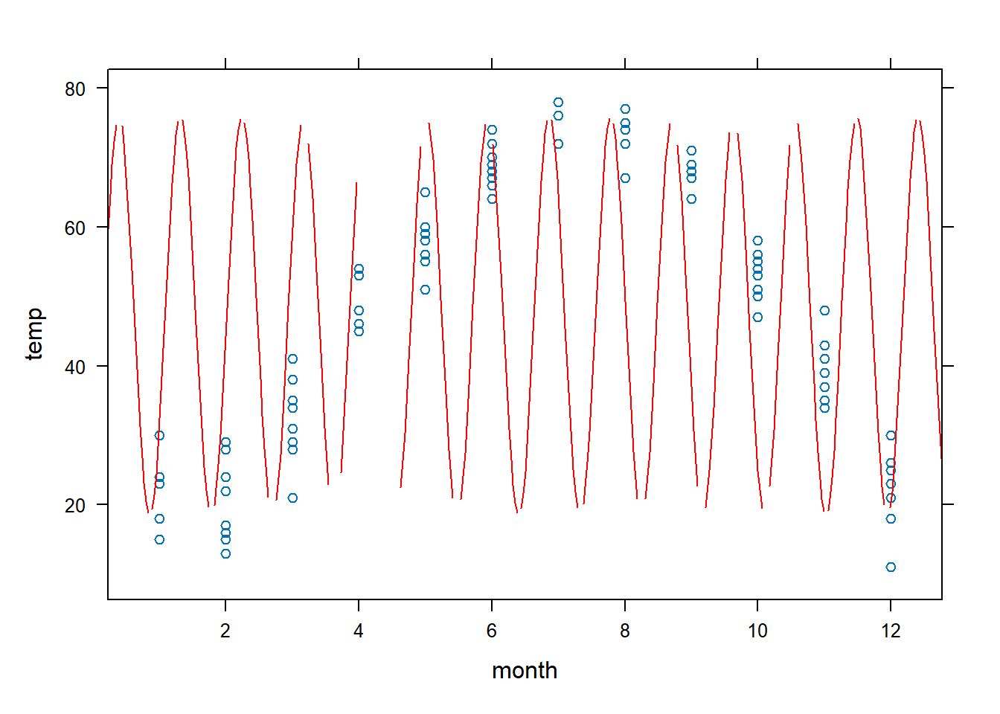
Slope Fields
The mosaicCalc package has a vectorfield_plot function that we use to create a slope field. So we need to make sure that this package has been loaded into RStudio.
Here is the code to create the slope field for \(\displaystyle{\frac{dP}{dt} = 5 - 2 P}\)

SIR Model
The mosaicCalc package has a vectorfield_plot function that we use to create a slope field, and a traj_plot function that we use to plot a trajectory. So we need to make sure that this package has been loaded into RStudio.
Here is some example code that plots an SIR slope field where
- The infection rate is \(a=0.001\)
- The removal rate is \(b=0.2\)
- \(0 \leq S \leq 800\)
- \(0 \leq I \leq 100\)
The horizontal axis is the susceptible population and the vertical axis is the infected population.
vectorfield_plot(S ~ - 0.001*S*I,
I ~ 0.001*S*I -0.2*I,
bounds(S=0:800, I=0:100),
transform=function(L) L^0.01)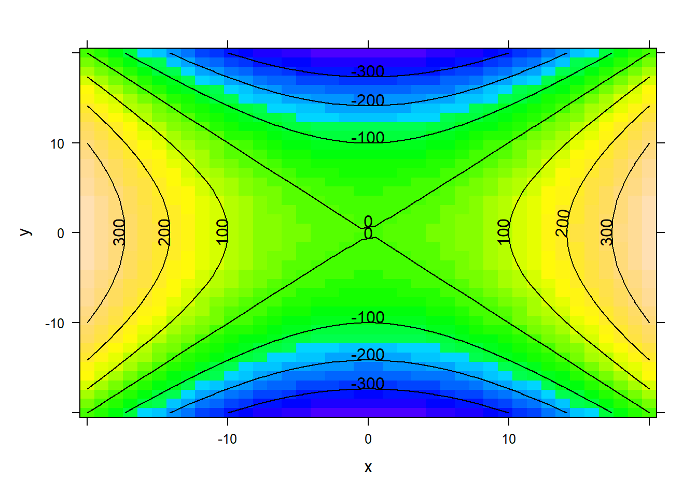
Here is some example code that plots a single SIR trajectory for this same model. Here are the additional inputs:
domain(t=0:80)means that the trajectory runs for \(0 \leq t \leq 80\).S=800means that the initial susceptible population is 800.I=5means that the initial infected population is 5.nt=20means that 20 tick marks will be added to the trajectory, showing the time that the point \((S,I)\) occurs.
SIRdyn = makeODE(dS ~ - 0.001*S*I,
dI ~ 0.001*S*I -0.2*I )
Soln = integrateODE(SIRdyn, domain(t=0:80), S=800, I=5)
traj_plot(I(t) ~ S(t), Soln, nt=20)## Solution containing functions S(t), I(t).Troubleshooting
Without fail, you will run into problems. Sometimes RStudio will give you helpful error messages, but sometimes they are obtuse. Here’s a list of some common errors and what might be wrong:
Nothing ran, all I got was a plus sign… You probably forgot some parentheses. Try the following:
- Enter a parenthesis on that line to see if this closes it out.
- Press the Escape key to get to a new line.
Unexpected symbol in… You may have forgotten a multiplication sign or otherwise gave RStudio a symbol it cannot parse. Check your line of code again to see if you have all your symbols.
Object not found… You may not have defined that variable (or function) yet. Check your environment tab to see if it has the object you’re looking for (or if you’ve called it something different than you remember!). You also may be trying to use something from a data set that you have not included as a parameter. See if you need to add in the parameter
data=....Could not find function… RStudio doesn’t know what function you’re using. Check your capitalization and that you have the right packages installed.
… number of items to replace is not a multiple of replacement length … Your input variable doesn’t match the name variable you used in the output when you called
makeFun. Maybe you usedxon one side of the tilde~andton the other side?Argument “name†is missing, with no default… You’re probably trying to take a derivative or antiderivative without the mosaicCalc package. Go back to the packages section of the introduction for how to fix this.
I can’t find my data! You may have fetched it but did not give it a name. Go back to your fetch command and make sure you have assigned it a variable.